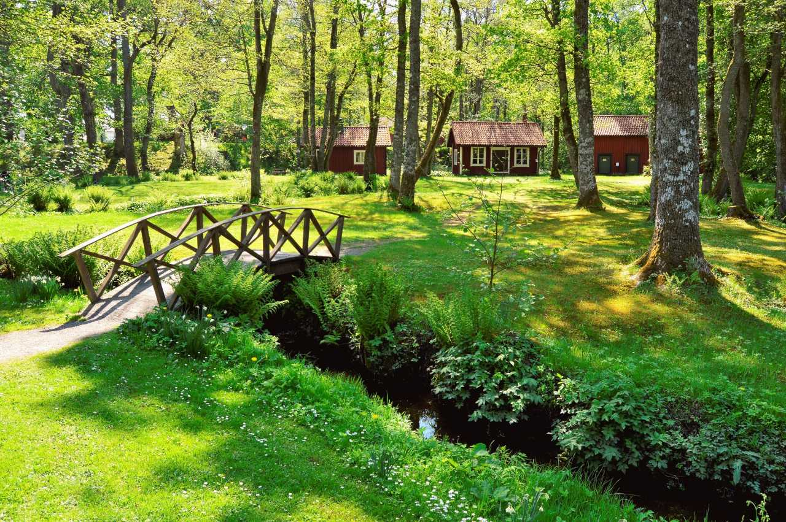

My Weather Services
Making Weather Accessable.
Saturday = Preston Pancakes in the Park! 9:00 A.M. Saturday at the city park pavilion.
☰
Home
Preston
Soda Springs
Fish Haven
Storm Center
Gallery
Weather Gallery
A Rainey Forest
A Rainey Town
A Lightning Strike
Lake with Snowy Mountains
Snowy Forest
Ice Lake
Sunny Street

Sunny Bridge
Sunny Park